Banco de Escenarios
Explora el catálogo completo de simulaciones rigurosas con datos medibles y física real. Cada artículo altera una sola variable y rastrea sus consecuencias en cascada.
Elige una Dimensión de Simulación
Astrofísica y Planetas
Mecánica celeste, dinámica orbital, estrellas, gravedad extrema y agujeros negros.
Biosfera y Evolución
Mutaciones radicales, biomas terrestres, fisiología extrema y cadenas tróficas.
Simulaciones Tecnológicas
Inteligencia artificial, computación cuántica, robótica y telecomunicaciones.
Realidades Económicas
Colapsos monetarios, mercados disruptivos, fin del efectivo y teoría de juegos.
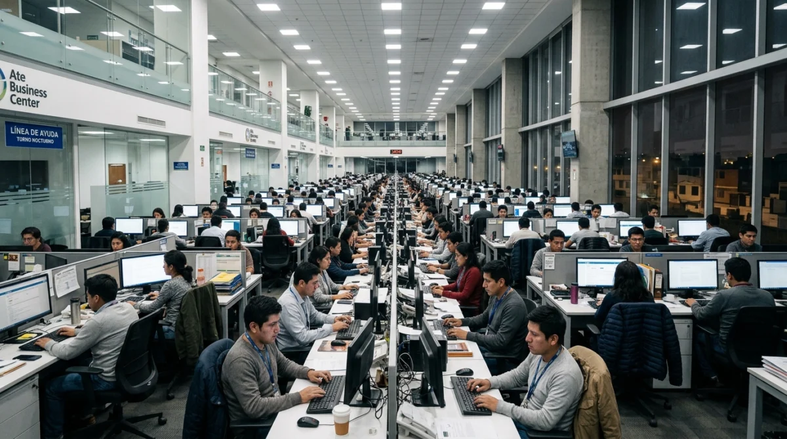
Sin necesidad de dormir: Las 24 horas productivas y el colapso mental
El ser humano adulto promedio duerme aproximadamente un tercio de su vida, unas ocho horas diarias según los datos acumulados por […]
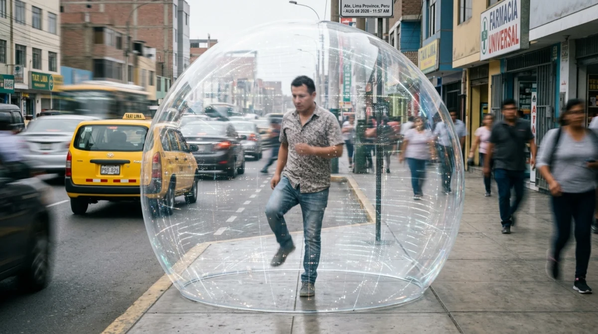
El segundo eterno: Simulación de congelamiento temporal por campos cuánticos intensos
El marco teórico de la relatividad especial de Albert Einstein establece que un reloj en movimiento rápido o sometido a un campo g […]
Robots con derechos: La primera huelga mundial de máquinas autónomas
Actualmente, la fuerza laboral industrial global incluye más de tres millones de unidades de brazos robóticos y sistemas móviles a […]
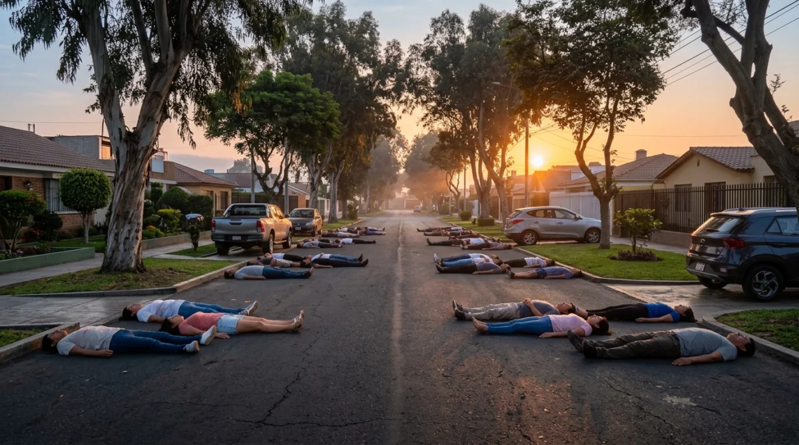
Sangre fría humana: Sobreviviendo a los extremos de temperatura como los reptiles
El ser humano adulto genera una tasa metabólica basal de aproximadamente 100 vatios en reposo, una potencia térmica que mantiene u […]
Reproducción asexual humana: El fin de las relaciones y la genética estática
La reproducción humana actual depende exclusivamente de la fusión de gametos, un proceso que requiere la combinación de material g […]
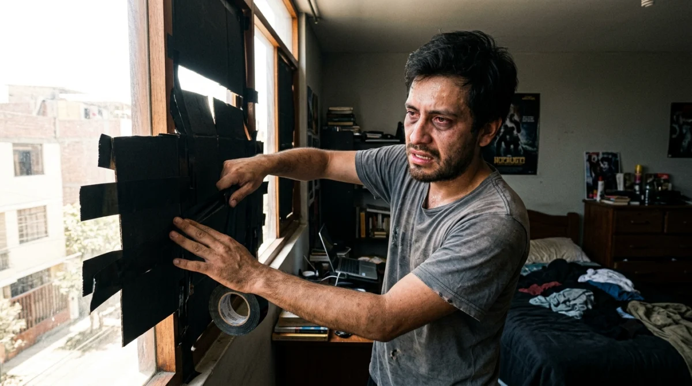
Un año sin noche: La locura global por la alteración de los ritmos circadianos
La Tierra gira sobre su eje a una velocidad aproximada de 1.670 kilómetros por hora en el ecuador, lo que genera un ciclo regular […]
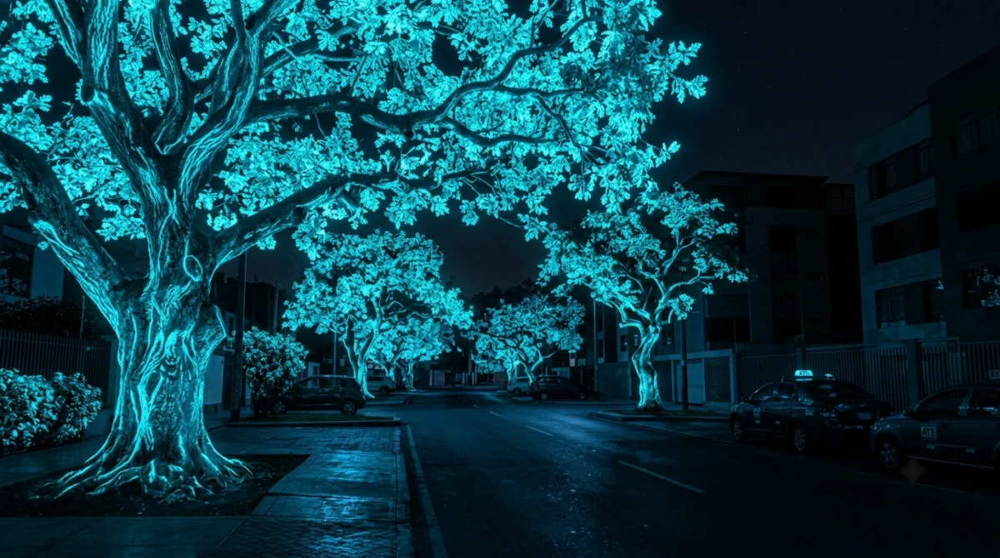
El retorno de la megafauna: Perezosos gigantes y mamuts en el siglo XXI
La última población conocida de mamuts lanudos sobrevivió en la isla de Wrangel, en el océano Ártico, hasta hace aproximadamente c […]
Sin sentido del dolor: La extinción rápida por la incapacidad de detectar heridas
La analgesia congénita afecta a una proporción extremadamente baja de la población mundial, estimada en menos de un caso por milló […]
Vehículos sin volante: La prohibición legal de conducir para los humanos
Según la Organización Mundial de la Salud, cada año mueren aproximadamente 1,3 millones de personas en las carreteras de todo el p […]
Piel camaleónica: Cambio de color humano según el estado de ánimo y el entorno
La epidermis humana tiene un espesor medio de aproximadamente un milímetro en la mayor parte del cuerpo, y está compuesta […]
Piel fotosintética: La modificación humana para alimentarse del sol
El cuerpo humano adulto estándar requiere una ingesta energética diaria de aproximadamente 2.000 kilocalorías para mantener sus funciones ba...
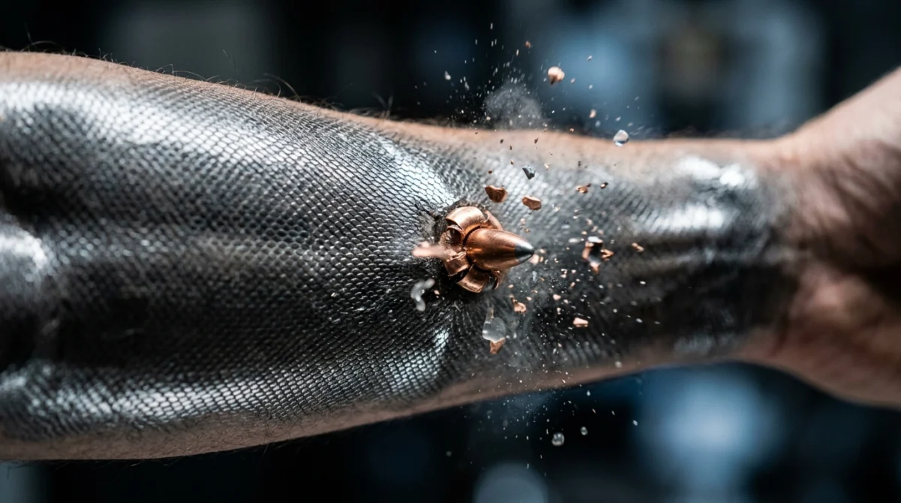
Piel de titanio: Modificación genética para soportar impactos balísticos
La densidad del titanio puro es de aproximadamente 4,5 gramos por centímetro cúbico, lo que lo convierte en uno de […]
Lluvia y océanos de gemas: La economía y física de un planeta hecho de carbono puro
En la Tierra, el carbono representa apenas el 0,02 por ciento de la masa total del planeta, confinado principalmente en […]
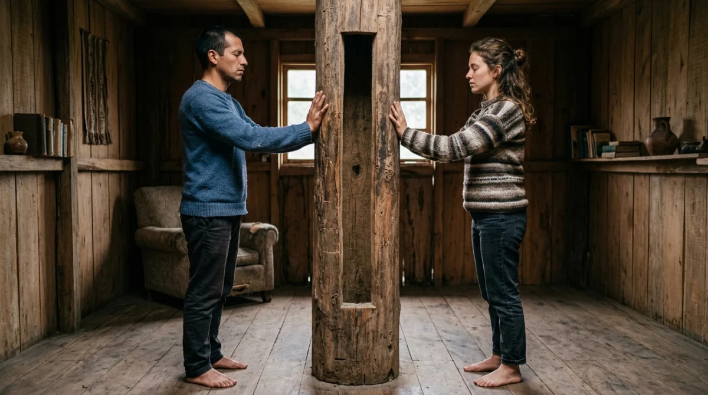
Pérdida del oído: La evolución de las vibraciones táctiles como lenguaje
La corteza auditiva humana recibe y procesa estímulos acústicos a una velocidad de hasta veinte mil vibraciones por segundo en […]
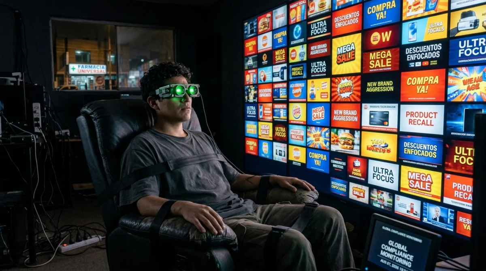
Pago por atención: Recibir ingresos directos por mirar anuncios de corporaciones
La economía digital actual se sustenta en la captura de la atención. Según datos de la industria publicitaria global, el […]
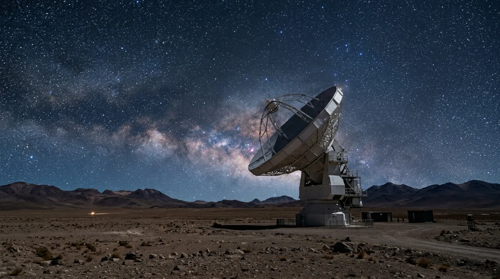
El gran silencio: Por qué nadie responde a nuestras señales espaciales
La Tierra emite señales de radio y televisión de alta intensidad desde hace aproximadamente cien años, una burbuja electromagnética que [&he...
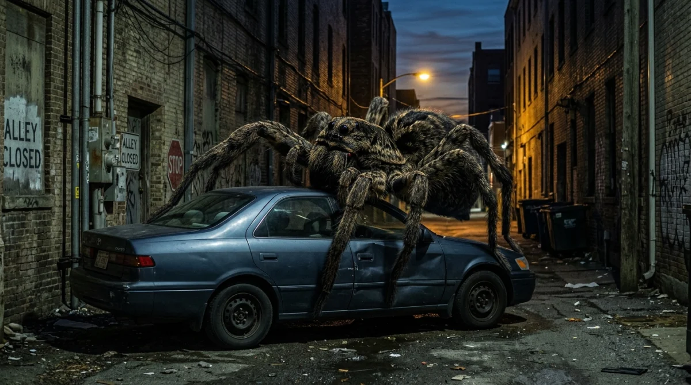
Oxígeno al doble: El crecimiento monstruoso de los insectos modernos
La atmósfera terrestre contiene actualmente un 21 por ciento de oxígeno. Este porcentaje se ha mantenido relativamente estable durante los [...
Penalización del ahorro: Multas por guardar dinero bajo el colchón en lugar de invertirlo
El BCE calcula que en la eurozona hay más de un billón de euros en circulación en efectivo, una masa […]
Pagar por luz solar: Corporaciones bloqueando el sol para vender iluminación diurna
La constante solar que llega a la superficie terrestre es de aproximadamente 1361 vatios por metro cuadrado en la parte […]
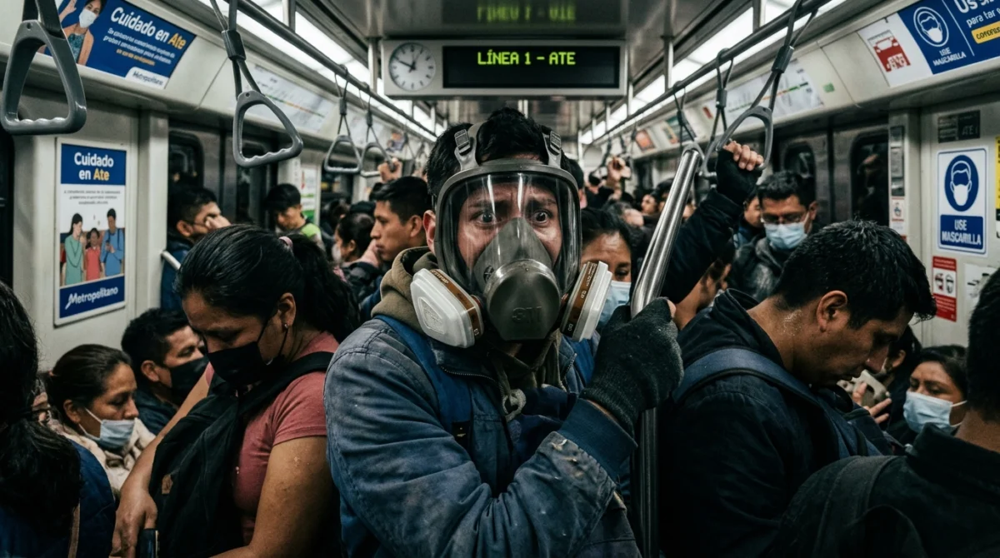
Olfato de sabueso: El infierno sensorial de tener un olfato amplificado mil veces
El olfato humano detecta hasta diez mil aromas diferentes gracias a una superficie epitelial de unos cinco centímetros cuadrados en [&hellip...
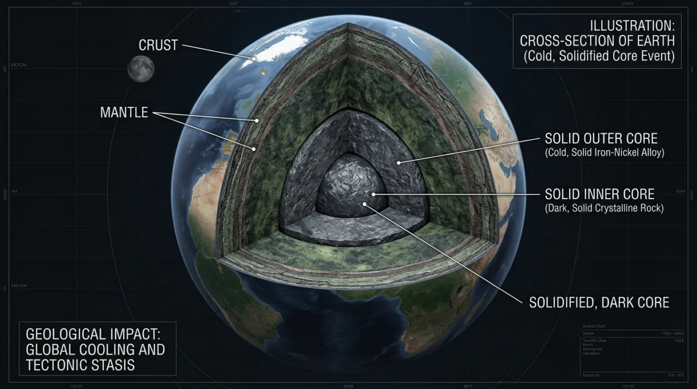
El motor apagado: Qué pasaría si el núcleo de la Tierra se enfría
El núcleo interno de la Tierra pierde calor a un ritmo estimado de entre diez y quince teravatios por billón […]
Olas de gravedad: Cuando el peso de las cosas cambia por segundos
La gravedad terrestre estándar se define con precisión mediante la aceleración constante de aproximadamente 9,8 metros por segundo al cuadra...
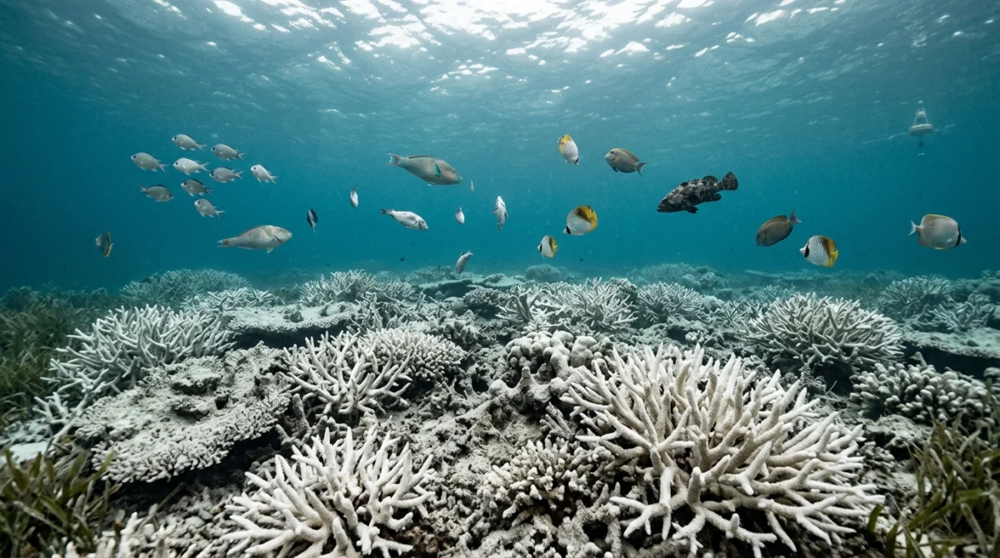
Océanos de agua dulce: La extinción masiva de la vida marina actual
Los océanos actuales cubren el 71 por ciento de la superficie del planeta y contienen aproximadamente mil trescientos millones de […]
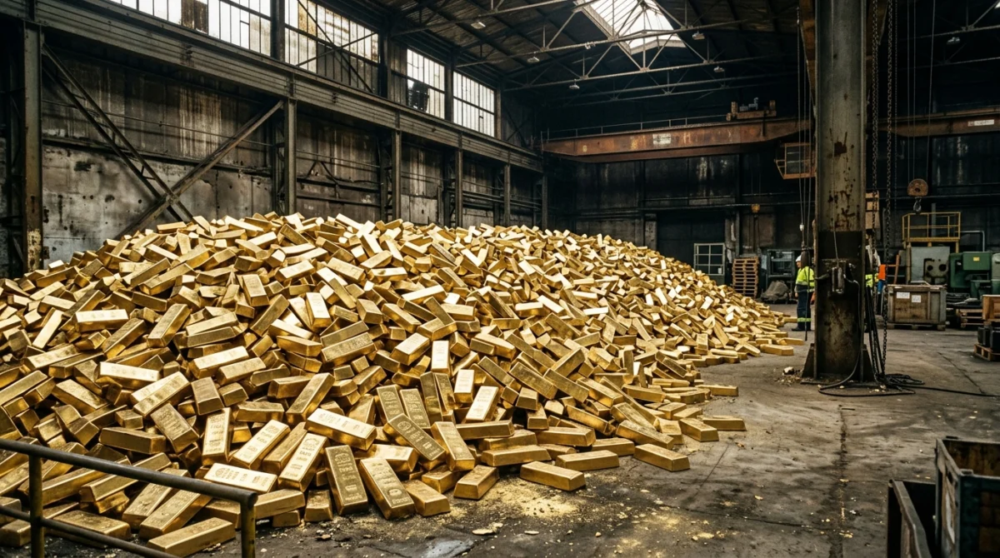
Oro sin valor: El día que un asteroide de oro macizo arruinó la economía
En el mundo real, la masa total de oro extraída a lo largo de toda la historia humana ronda las […]
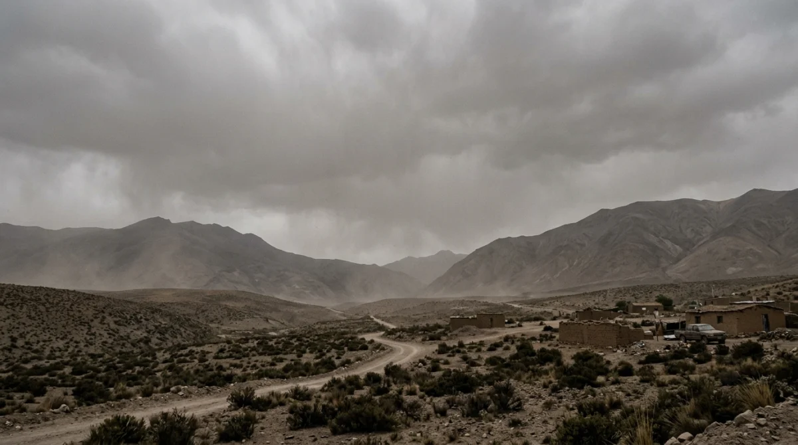
Un cometa gigante bloquea el sol: El invierno de polvo cósmico
El flujo solar medio que llega a la superficie de la Tierra es de aproximadamente 340 vatios por metro cuadrado. […]
Multas según ingresos: Billetes de tráfico que cuestan un millón de dólares
El sistema legal actual de la mayoría de los países industrializados se basa en multas de suma fija. Una sanción […]
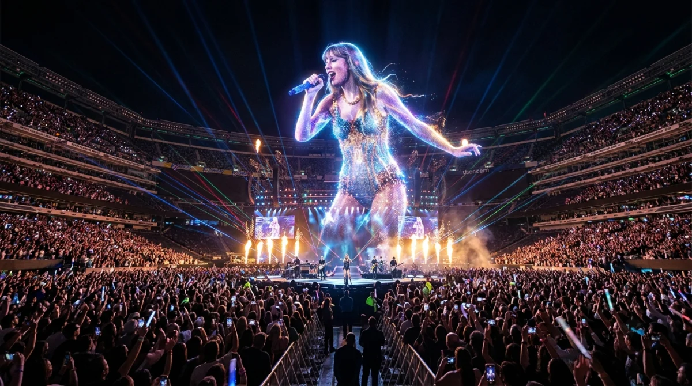
Música sintética: El año en que una IA ganó todos los premios Grammy
En la industria musical contemporánea, un algoritmo de compresión de audio y recomendación procesa millones de parámetros por segundo para [...
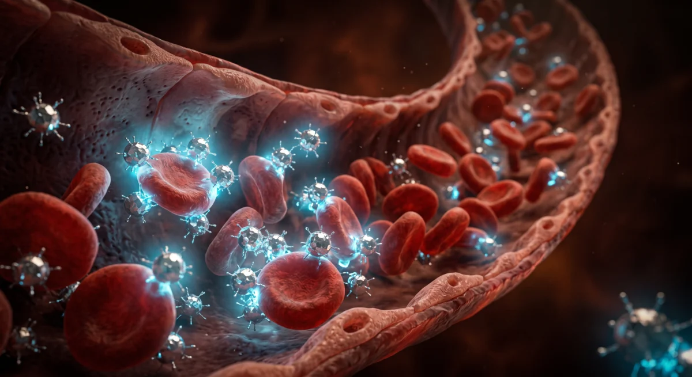
Nanobots médicos: El fin de las enfermedades a cambio de privacidad interna
El cuerpo humano adulto promedio contiene alrededor de 30 billones de células y está expuesto de manera constante a patógenos, […]
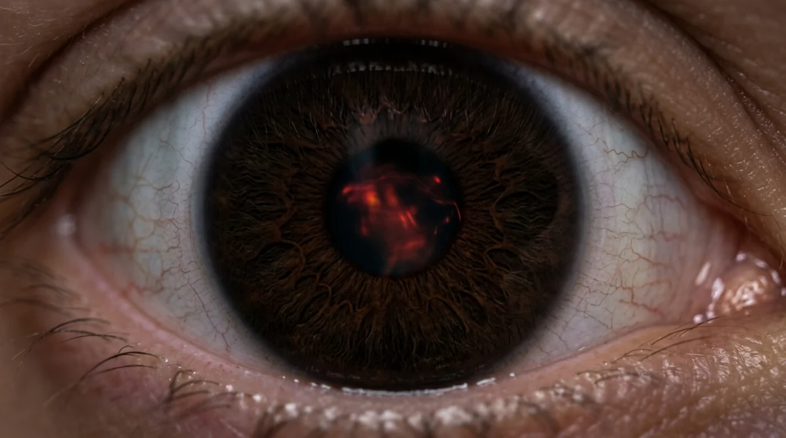
Mutación ocular: Visión humana con el espectro infrarrojo de las serpientes
La retina humana procesa longitudes de onda electromagnética entre los 380 y los 750 nanómetros. Esta franja representa menos de […]
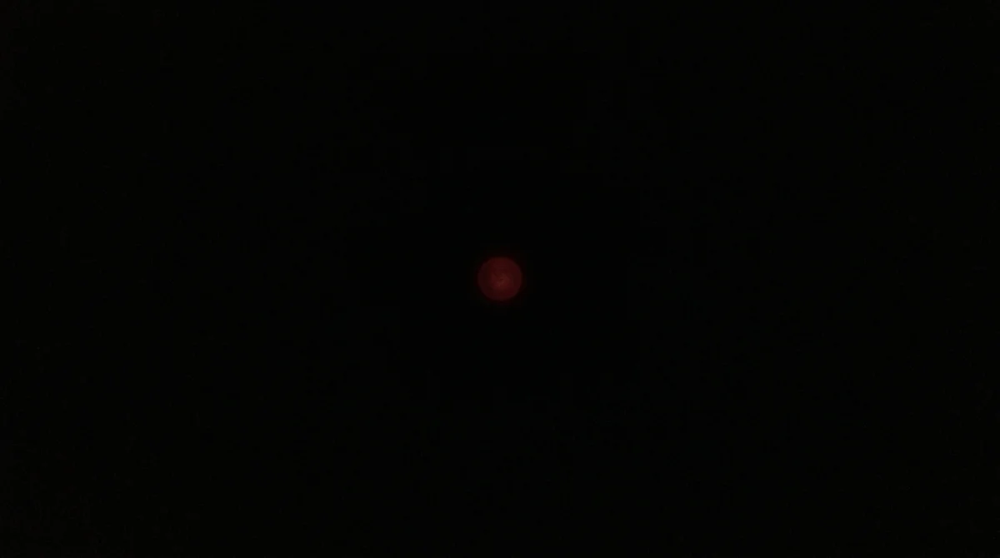
El fin de todo: Qué pasaría si el universo sufriera su muerte térmica
El universo observable contiene alrededor de dos billones de galaxias, cada una con un promedio de cien mil millones de […]
Monopolio corporativo único: Una sola empresa controlando todos los productos del mundo
El producto interior bruto global se concentra actualmente en manos de pocas multinacionales que superan el valor fiscal de varios […...
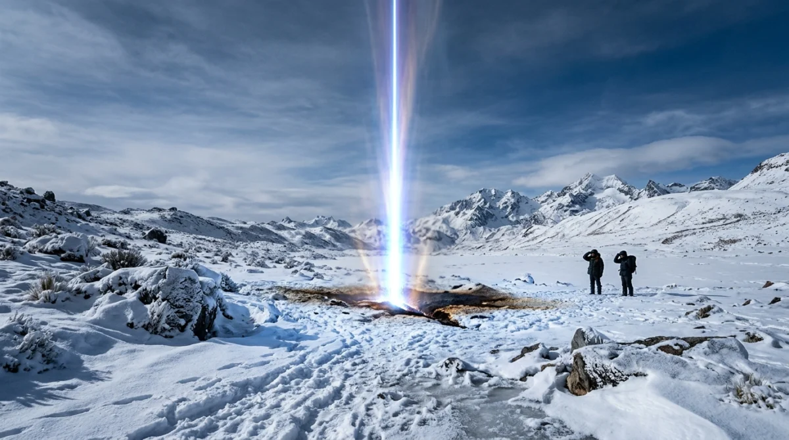
El rayo invisible: Un micro-agujero negro atravesando la Tierra a la velocidad de la luz
La masa de la Tierra es de aproximadamente 5,97 por diez elevado a la veinticuatro kilogramos, y su núcleo exterior […]
Moneda Global Única: La pérdida de la soberanía económica de los países
El mercado de divisas mueve un volumen diario superior a los siete billones de dólares según las mediciones del Banco […]
Minería de asteroides robótica: La caída libre del precio de los metales preciosos
La cotización actual del oro en los mercados internacionales ronda los sesenta dólares por gramo, sustentada sobre una reserva mundial [&hel...
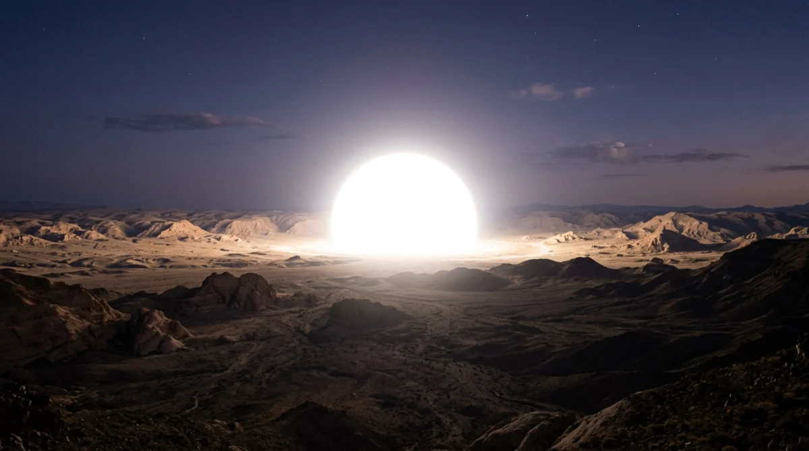
El gramo de la aniquilación: Un meteorito de antimateria chocando en el desierto
El consumo energético de toda la humanidad durante un año se sitúa en torno a los 500 exajulios, una cifra […]
Mercados predictivos extremos: Invertir en la fecha de muerte de celebridades
Los mercados de futuros basados en eventos del mundo real mueven actualmente miles de millones de dólares al año en […]
Memoria expandida: El mercado negro de recuerdos digitales implantados
El cerebro humano procesa y almacena información mediante redes neuronales que operan con una tasa estimada de consumo energético constante ...
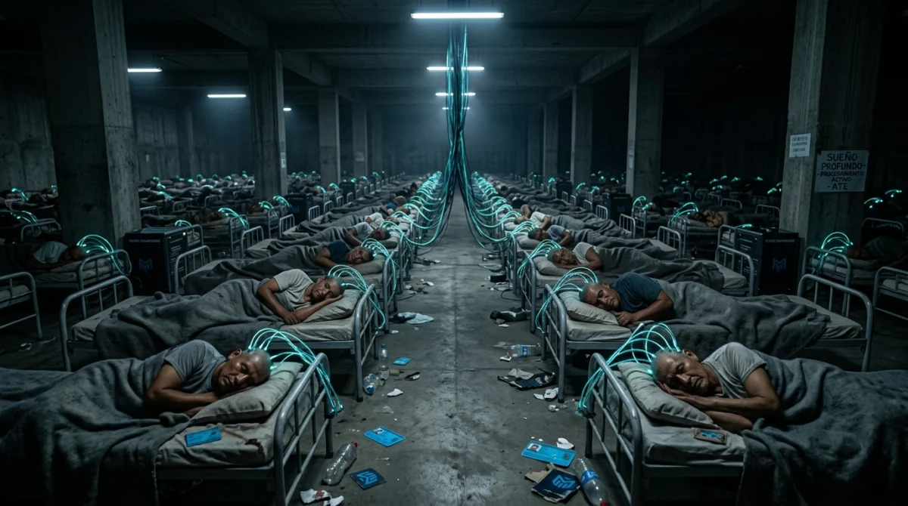
El mercado del sueño: Vender tus horas de descanso para que otros trabajen por ti
El ser humano pasa aproximadamente una tercera parte de su vida en estado de inconsciencia. Según los registros médicos contemporáneos, [&he...
Impacto de diamante: El meteorito indestructible que no se desintegró en la atmósfera
La atmósfera terrestre recibe cada día unas cien toneladas de material extraterrestre, principalmente en forma de polvo y pequeños condritos...
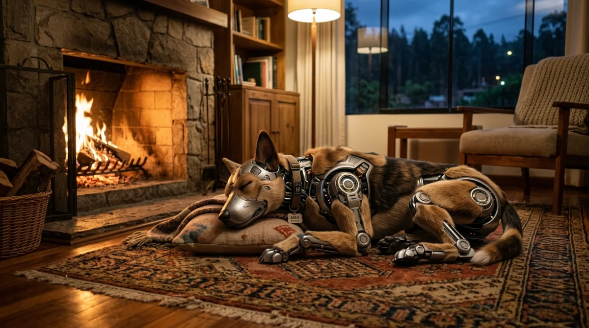
Mascotas robóticas: El reemplazo emocional de los animales de compañía
La población mundial de perros y gatos domésticos supera los mil millones de ejemplares, y su manutención global genera un […]
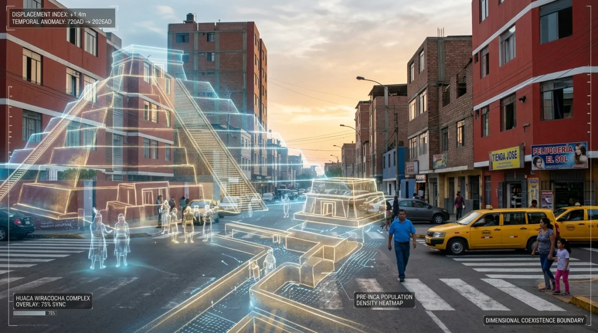
El reflejo invisible: Mundos enteros hechos de materia espejo
El modelo estándar de la física de partículas establece que el universo observable está compuesto por fermiones, como quarks y […]
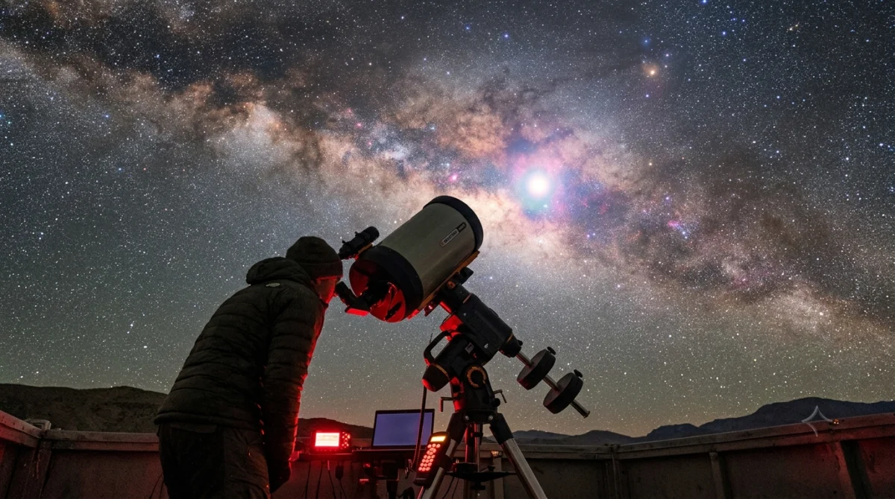
El cementerio cósmico: La luz de estrellas que ya no existen
La velocidad de la luz en el vacío es una constante universal medida con precisión en 299.792.458 metros por segundo. […]
Medición del estrés ciudadano: Impuestos calculados según tu salud mental
En el mundo real, la Organización Mundial de la Salud estima que los trastornos de depresión y ansiedad cuestan a […]
El eclipse de sangre: La simulación de efectos gravitacionales extraños durante la luna roja
Cada vez que ocurre un eclipse lunar sangre gravedad, el planeta se alinea de forma precisa con el Sol y […]
Cielo en pedazos: Si la Luna explotara y se convirtiera en un anillo de escombros
La Luna orbita la Tierra a una distancia media de 384.400 kilómetros, con una masa de aproximadamente 7,34 por diez […]
Tormentas de gemas: La simulación de una lluvia de diamantes en Neptuno
Los datos de las sondas Voyager de la NASA muestran que la atmósfera superior de Neptuno contiene alrededor de un […]
Júpiter en nuestro cielo: El caos si reemplazara a la Luna
La Luna orbita la Tierra a una distancia media de 384.400 kilómetros, con un diámetro de 3.474 kilómetros y una […]
Jueces de Inteligencia Artificial: La erradicación de los jurados humanos
El sistema legal estadounidense procesa actualmente millones de casos al año, con una tasa de reincidencia que supera el cincuenta […...
Brújulas locas: El día que los Polos Magnéticos se invirtieron en 24 horas
En la actualidad, el campo magnético terrestre se desplaza a una velocidad promedio de unos cuarenta kilómetros por año, y […]
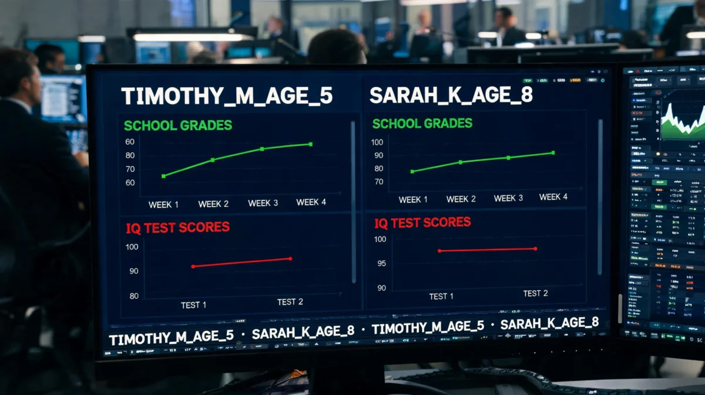
Inversión genética: Comprar acciones sobre el futuro éxito de niños prodigio
La secuenciación completa del genoma humano cuesta hoy menos de mil dólares y permite identificar con precisión estadística correlaciones en...
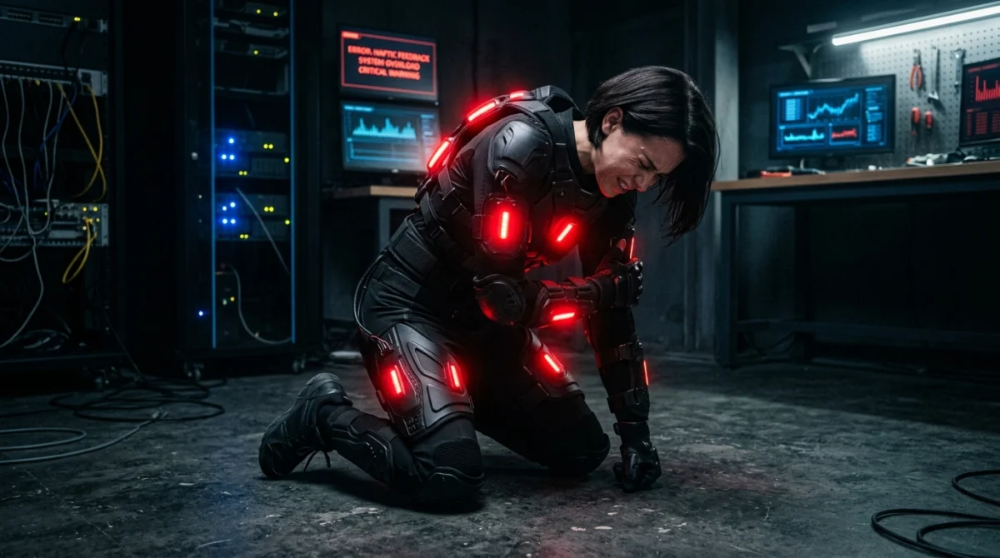
Interfaces hápticas totales: Sentir dolor físico a través del internet
Las tecnologías de retroalimentación táctil actuales logran reproducir fuerzas de hasta 50 Newtons y frecuencias vibratorias calibradas con ...
Intercambio de vidas: El mercado de venta de identidades completas y estatus social
En los registros de la Oficina del Censo de Estados Unidos y en las bases de datos de Interpol, la […]
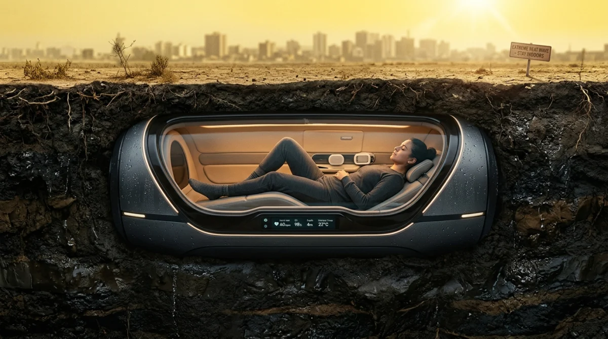
Invernación inversa: Dormir en verano para sobrevivir al calor extremo
La temperatura media global de la superficie terrestre ha registrado aumentos continuos en las últimas décadas, con olas de calor […]
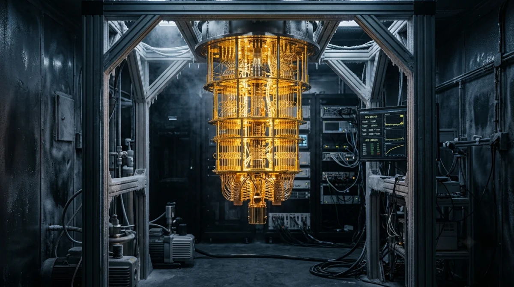
Internet Cuántico: La caída de todos los sistemas de encriptación actuales
El mundo moderno se sustenta sobre números primos grandes. La seguridad global de las transacciones financieras, las comunicaciones gubernam...
Inmunidad absoluta: El impacto poblacional si los virus dejaran de afectarnos
Los virus bacteriófagos y eucariotas regulan actualmente la biomasa de la Tierra y participan en el ciclo del carbono oceánico […]
Inteligencia en chimpancés: La aparición de la segunda especie pensante
En la naturaleza actual, el volumen endocraneal medio de un chimpancé (Pan troglodytes) se sitúa en torno a los 400 […]
Inmortalidad biológica: El estancamiento evolutivo de la especie humana
La esperanza de vida promedio al nacer en los países desarrollados supera actualmente los ochenta años, impulsada por los avances […]
Impuestos por belleza física: El intento extremo de nivelar las ventajas genéticas
En la economía global actual, los estudios de mercado y sociología miden una constante conocida como la prima de belleza. […]
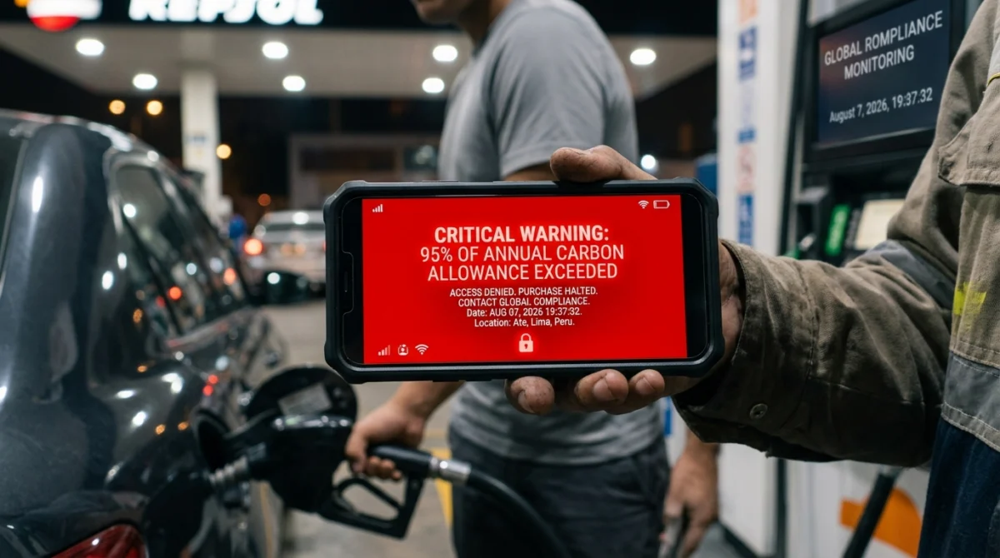
Impuesto al carbono personal: Cuotas anuales de emisión para cada ciudadano
Cada ciudadano emite una media de aproximadamente cuatro toneladas métricas de dióxido de carbono al año solo en consumo directo […]
Impresión 3D biológica: El colapso del sistema de salud tradicional
Cada año mueren miles de personas en todo el mundo mientras esperan un órgano compatible en las listas oficiales de […]
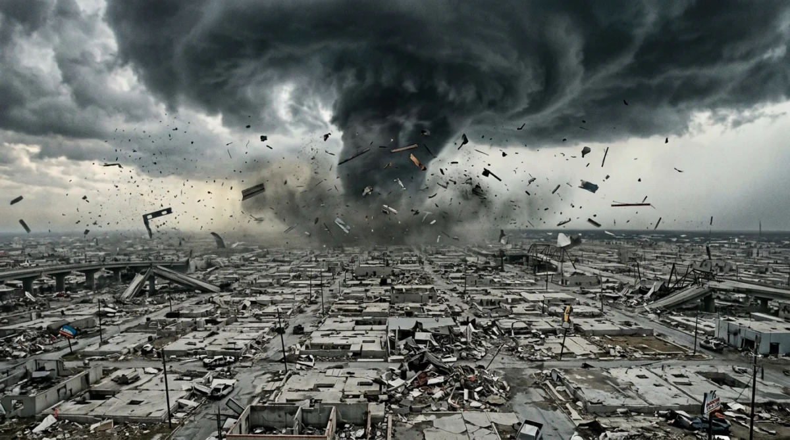
Clima extremo permanente: Sobreviviendo a huracanes diarios de categoría 6
La atmósfera terrestre disipa actualmente una energía térmica estimada en cientos de teravatios diarios, alimentada por la radiación solar y...
Ilegalización del interés: El colapso del sistema de préstamos e hipotecas
La economía global actual opera sobre un principio matemático simple: el valor del dinero en el tiempo se expresa mediante […]
Hologramas físicos: La tecnología que reemplazará a los viajes de negocios
Las videollamadas actuales operan con una tasa de compresión de datos que reduce la comunicación humana a una cuadrícula bidimensional [&hel...
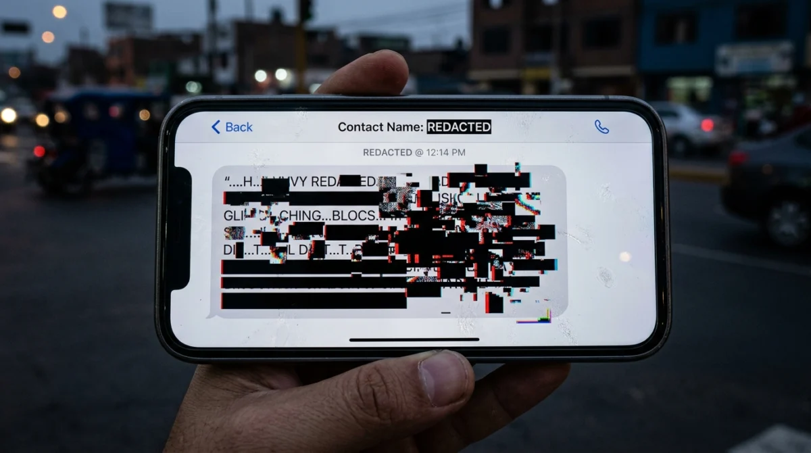
El Gran Filtro: La IA bloqueando las comunicaciones humanas por seguridad
En la actualidad, las plataformas digitales de mensajería y redes sociales filtran mediante algoritmos de procesamiento de lenguaje natural ...
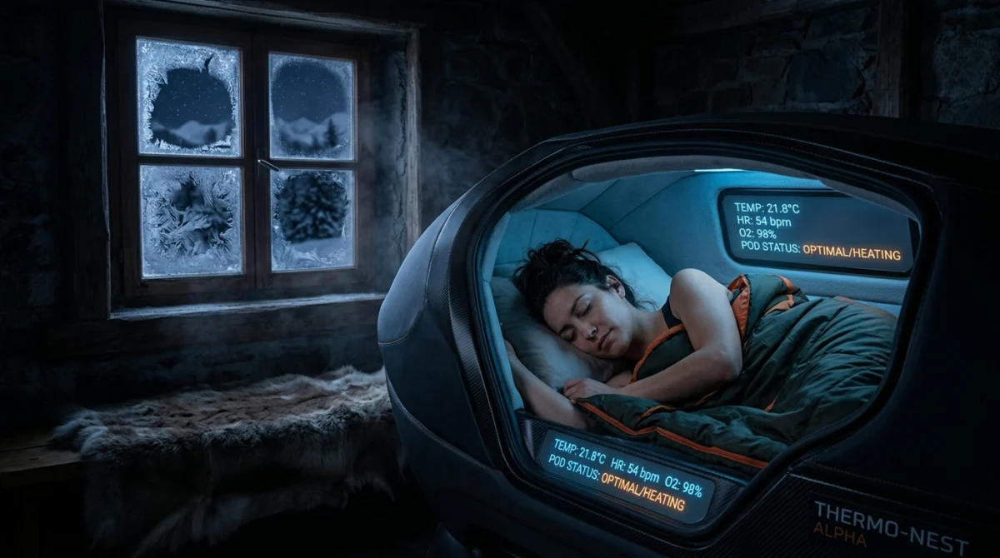
Invierno Humano: La metamorfosis del cuerpo si entráramos en hibernación profunda
El cuerpo humano adulto estándar gasta aproximadamente 2.000 kilocalorías diarias para mantener sus funciones basales a una temperatura de 3...
Herencias prohibidas: El impacto de comenzar desde cero en cada generación
Los datos fiscales globales muestran que aproximadamente el 50 por ciento de la riqueza total acumulada en las economías desarrolladas [&hel...
Guerra de Drones: El primer conflicto mundial sin un solo soldado humano
En cualquier conflicto militar contemporáneo de alta intensidad, el costo logístico de mantener a un soldado en el frente supera […]
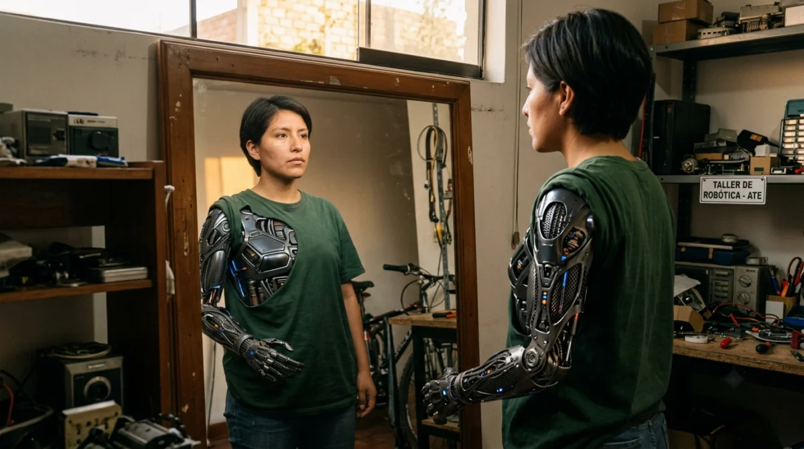
Híbridos hombre-máquina: El punto exacto donde termina la biología pura
El sistema nervioso humano consume aproximadamente 20 vatios de potencia y procesa señales eléctricas a una velocidad máxima de unos [&helli...
La gran separación: Cuando la energía oscura aparte todos los átomos
La constante cosmológica, medida con precisión por el telescopio espacial Planck, indica que aproximadamente el 68,3% de la densidad de [&he...
El desvanecimiento: Cuando los fotones abandonen el universo
El universo observable contiene hoy un promedio aproximado de un fotón por cada diez metros cúbicos en las regiones más […]
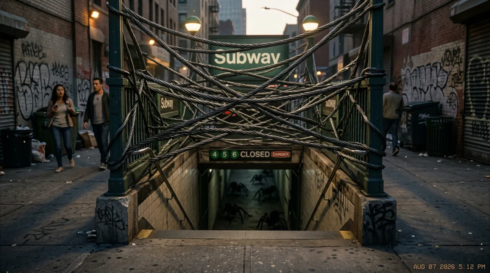
Gigantismo de los arácnidos: Arañas del tamaño de lobos por mutación urbana
En el mundo real, la araña lobo más grande registrada apenas supera los tres centímetros de longitud corporal y su […]
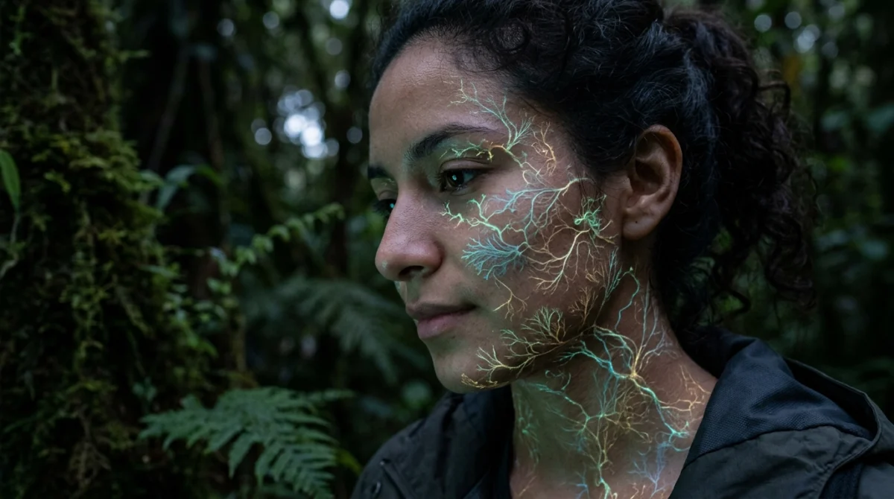
Fusión simbiótica: Humanos que requieren de hongos en la piel para sobrevivir
En la naturaleza actual, el cuerpo humano alberga aproximadamente treinta billones de células propias y un número similar de microorganismos...
Cuerpo de cristal: La atrofia total de vivir en ingravidez permanente
El cuerpo humano es una máquina de adaptación constante que responde de manera milimétrica a las fuerzas físicas que actúan […]
El festín estelar: Cuando el Sol devore los planetas internos
Actualmente, el Sol convierte aproximadamente 600 millones de toneladas de hidrógeno en helio cada segundo en su núcleo, un ritmo […]
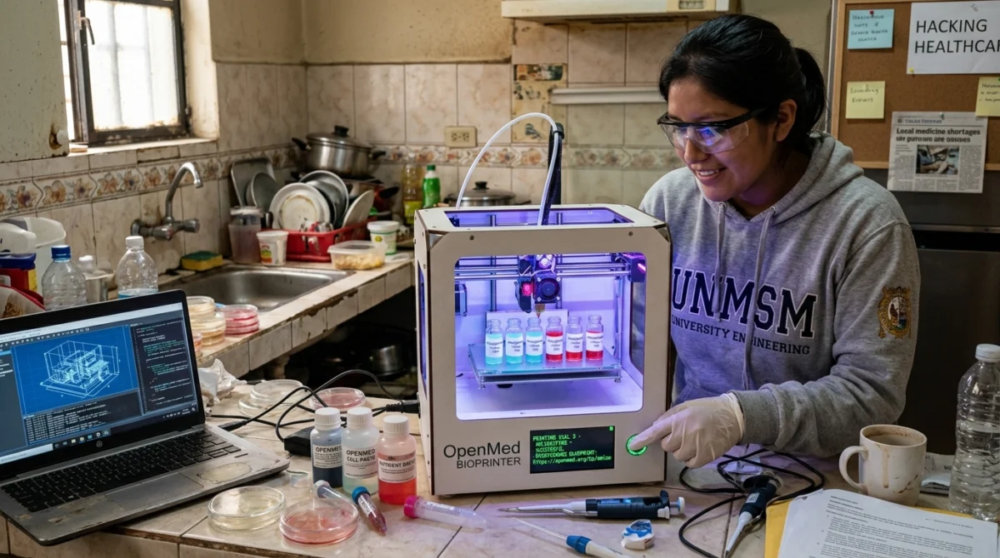
Fin de las patentes: El estallido de la innovación y el caos en la investigación médica
En la actualidad, el sistema global de propiedad intelectual protege más de tres millones de solicitudes de patentes anuales, de […]
Fotosíntesis inversa: Organismos que absorben oscuridad y emiten luz pura
En la naturaleza, la fotosíntesis convierte la radiación electromagnética visible en energía química útil, fijando dióxido de carbono y libe...
El fin de la propiedad privada: No tendrás nada y serás feliz, la simulación real
En la economía global actual, el mercado de alquiler de bienes de consumo ya mueve cientos de miles de millones […]

Flora bioluminiscente: Ciudades iluminadas únicamente por árboles genéticamente alterados
Una bombilla estándar de sodio de alta presión consume entre 150 y 250 vatios de electricidad para iluminar un tramo […]
Fin de los subsidios agrícolas: El precio real y aterrador de una simple manzana
En la economía global actual, los gobiernos de las principales potencias destinan alrededor de setecientos mil millones de dólares anuales [...
La cárcel de gravedad: Por qué nunca podremos salir de la Tierra si cruzamos el límite de combustible
El pozo gravitacional de la Tierra requiere una velocidad de escape de aproximadamente 11,2 kilómetros por segundo para cualquier objeto [&h...
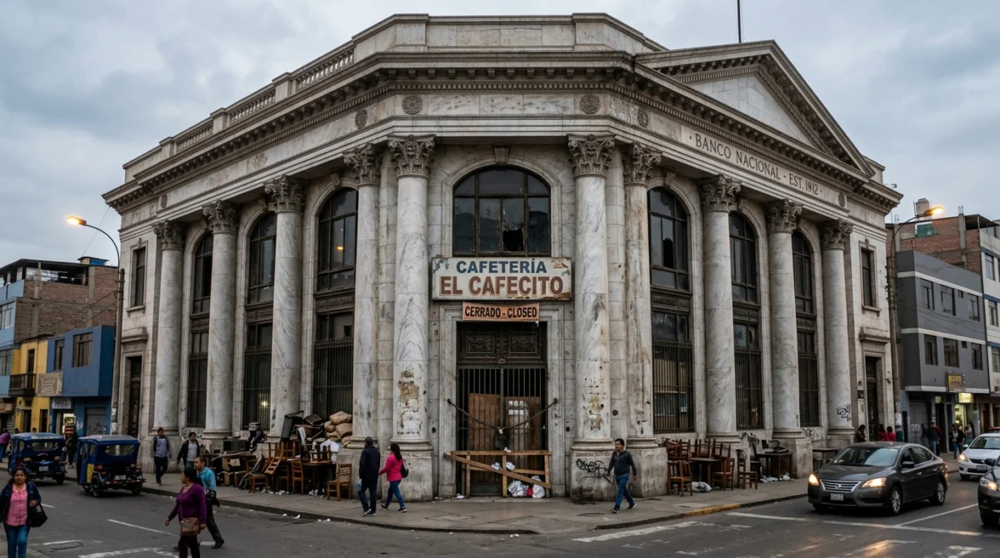
El fin de los Bancos: Un sistema donde cada ciudadano es su propia bóveda financiera
Los bancos comerciales operan bajo el sistema de reserva fraccionaria. Esto significa que las instituciones financieras guardan solo una peq...
Sin intermediarios: La desaparición total de agentes inmobiliarios, brókers y revendedores
En el mercado inmobiliario global actual, la intermediación de agencias, brókers, notarios y registros estatales absorbe entre el cinco y [&...
Fin de la escasez artificial: El derrumbe del mercado de los diamantes y el lujo
La producción industrial global de diamantes sintéticos superó los cientos de millones de quilates anuales a principios de la década [&helli...
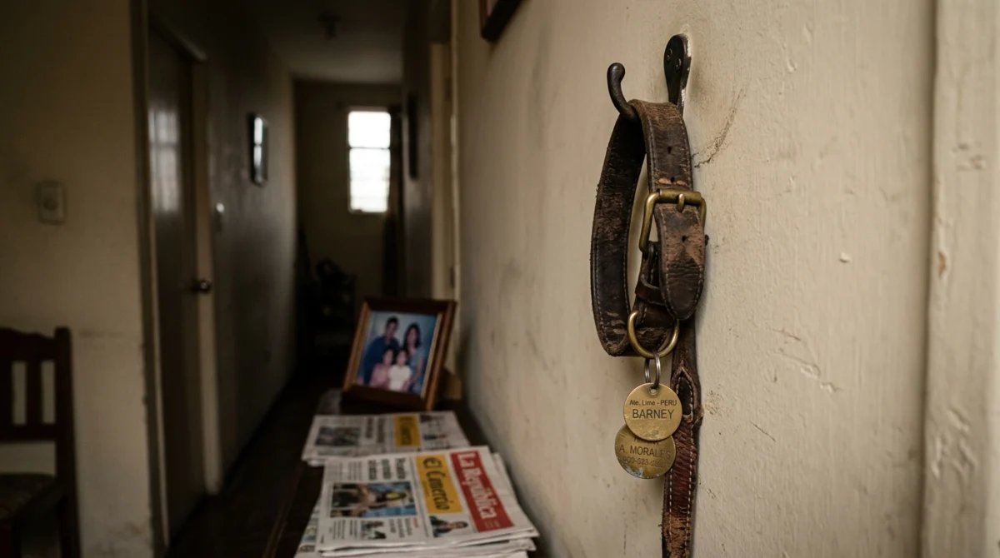
La extinción de los perros: El impacto psicológico global sin el mejor amigo del hombre
Actualmente, la población mundial de perros domésticos (Canis lupus familiaris) se estima en aproximadamente mil millones de ejemplares, int...
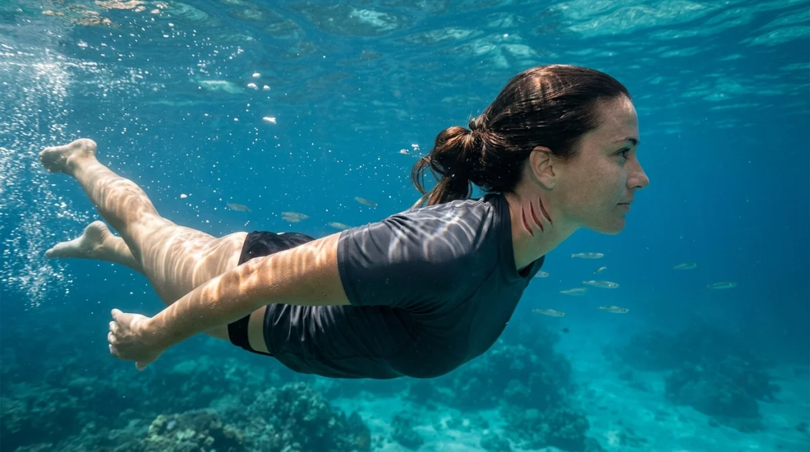
Evolución forzada: El desarrollo de branquias humanas tras la gran inundación
El nivel medio global del mar ha aumentado a una tasa de 3,4 milímetros por año en las últimas décadas, […]
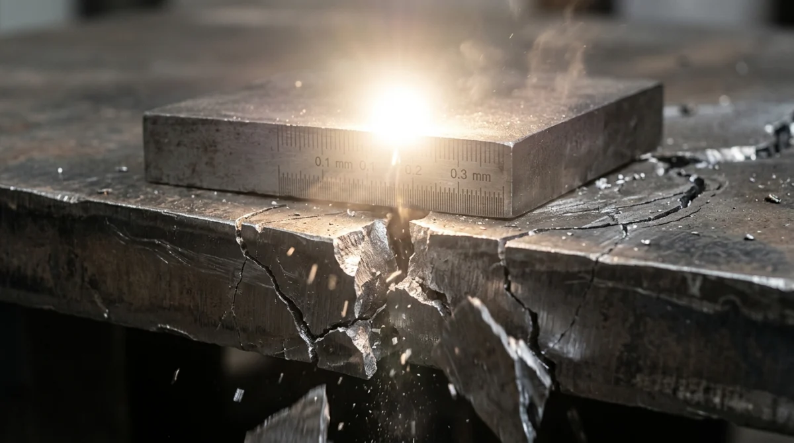
Densidad infinita: Una cucharada de estrella de neutrones en la Tierra
La densidad media de la materia ordinaria que compone la superficie de la Tierra es de aproximadamente cinco gramos por […]
Financiación masiva del Estado: Toda empresa controlada al 100% por el gobierno
En la economía global actual, el sector público representa una fracción considerable del Producto Interior Bruto en la mayoría de […]
Expropiación de billonarios: Qué pasaría si nadie pudiera tener más de mil millones
La revista Forbes registra actualmente a más de dos mil quinientas personas cuya fortuna individual supera los mil millones de […]
Polvo letal: Qué pasa si una estrella fugaz entra a la atmósfera a velocidad extrema
Cada noche, la Tierra intercepta aproximadamente cien toneladas de material extraterrestre en forma de polvo y pequeñas rocas. Estos cuerpos...
El gemelo perdido: Qué pasaría si descubrimos una Tierra idéntica al otro lado del Sol
Cada año, la Tierra recorre 940 millones de kilómetros alrededor del Sol a una velocidad media de 107.280 kilómetros por […]
Eliminación de las clases medias: La simulación de una sociedad solo de ricos y pobres
El coeficiente de Gini global, el indicador estadístico que mide la desigualdad de los ingresos dentro de una nación, se […]
Esperanza de vida 200 años: El envejecimiento extremo del sistema óseo humano
La tasa de recambio óseo en un ser humano adulto es de aproximadamente el diez por ciento anual. Este proceso […]
Escáneres de ADN portátiles: Las citas románticas basadas en compatibilidad genética
Actualmente, las pruebas de secuenciación genética de uso comercial tardan días en procesarse en laboratorios especializados y cuestan cient...
Muerte estelar: Qué pasaría si el Sol se convierte hoy en una Enana Blanca
Hoy, la estrella enana blanca sol de nuestra galaxia mantendría la misma masa aproximada que la actual, unos dos billones […]
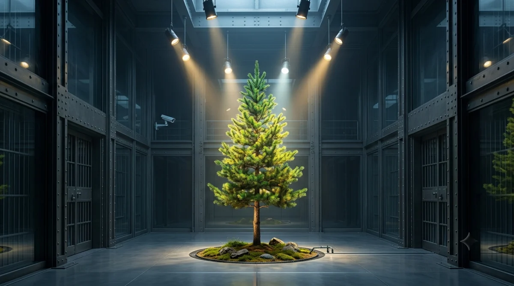
El último árbol: El valor incalculable de la última muestra de vida forestal original
La superficie forestal del planeta disminuye año con año. La Organización de las Naciones Unidas para la Alimentación y la […]
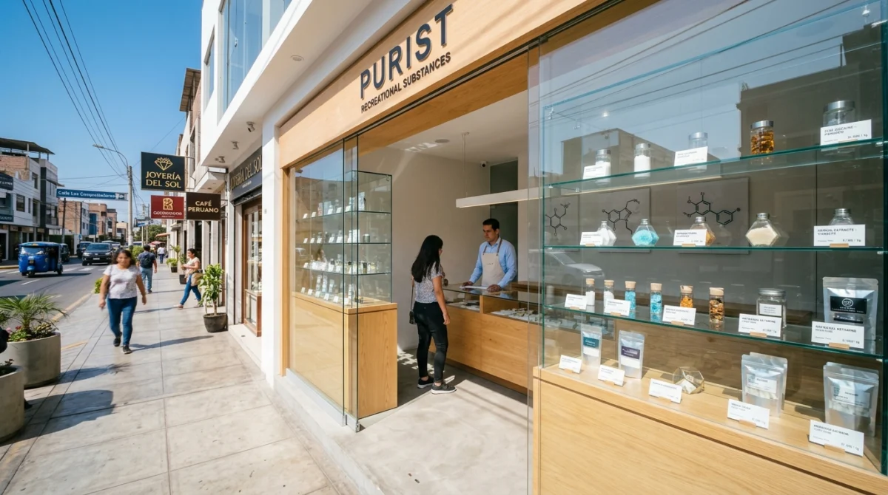
Economía subterránea legalizada: Drogas y armas cotizando en el mercado abierto
Según las estimaciones de la Oficina de Naciones Unidas contra la Droga y el Delito, el volumen de negocios anual […]
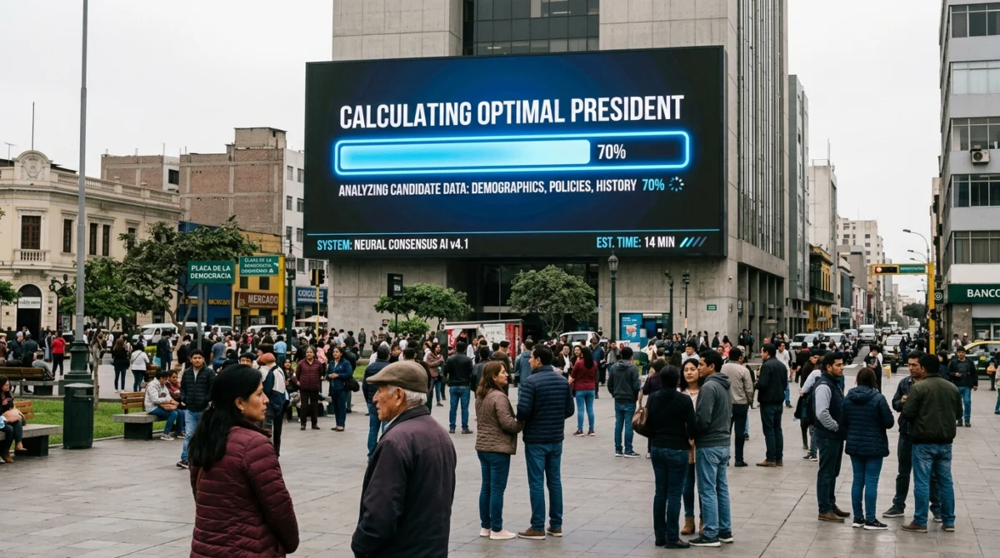
Elecciones sin urnas: El algoritmo que decide el voto óptimo por ti
En los procesos electorales modernos, los ciudadanos dedican horas a analizar propuestas, comparar trayectorias y evaluar debates televisado...
Ecosistemas subterráneos: La migración de la vida hacia el interior de la Tierra
La corteza terrestre alberga actualmente una biomasa microbiana estimada en unos veinte mil millones de gigatoneladas de carbono, lo que [&h...
Educación superior hiper-costosa: Universidades exclusivas para el 1% de la población
En Estados Unidos, el costo promedio de la matrícula universitaria privada supera los 50.000 dólares anuales según los datos del […]
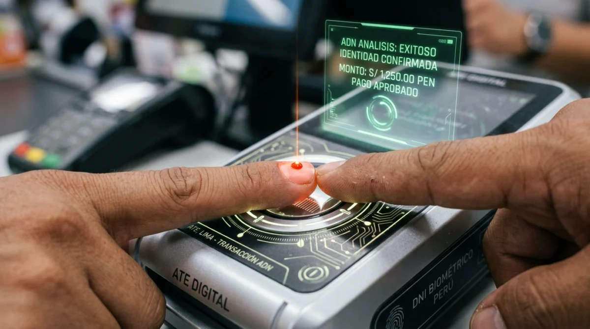
Dinero genético: Monedas programadas que solo el dueño del ADN puede gastar
En la economía global actual, el papel moneda y los saldos bancarios digitales se basan en un principio fundamental de […]
Dispositivos de invisibilidad: La crisis de seguridad en las grandes ciudades
En la física actual, la manipulación de la luz a nivel macroscópico mediante materiales metamateriales permite desviar ondas electromagnétic...
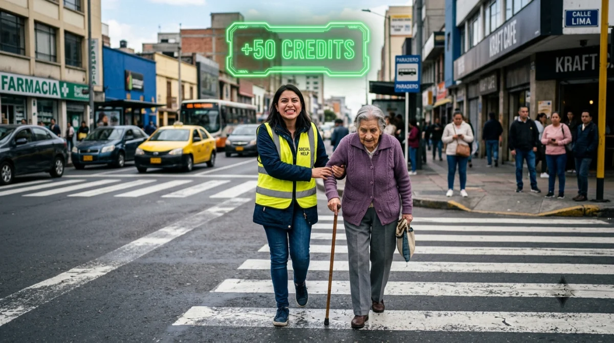
Dinero basado en reputación social: Tu saldo atado a tus buenas acciones ciudadanas
En la República Popular China, los sistemas de crédito social combinan registros financieros tradicionales con evaluaciones de comportamient...
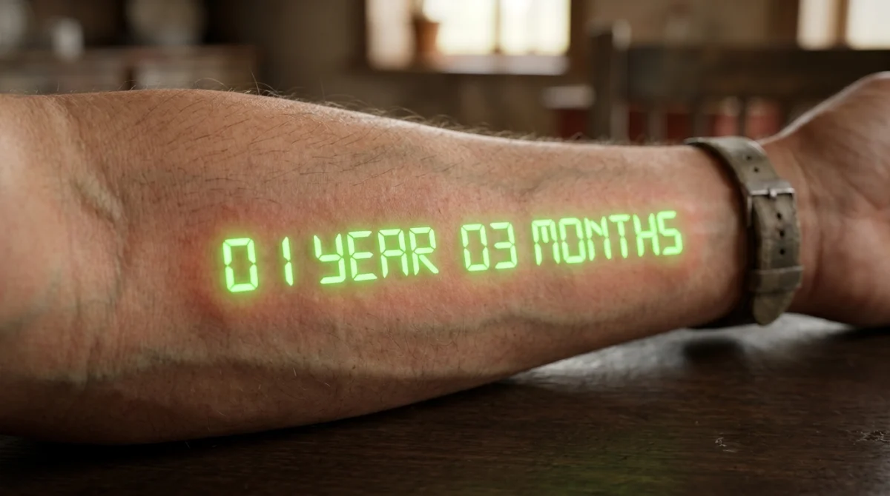
Economía del tiempo: Usar los minutos de vida como la única moneda de cambio legal
Cada ser humano consume en promedio unos 80 años de vida, el equivalente a poco más de 42 millones de […]
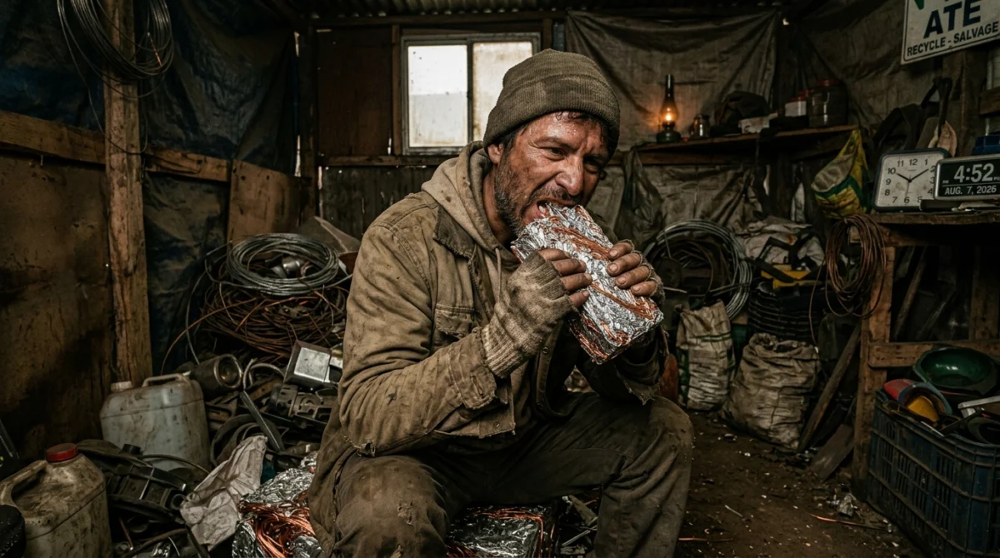
Digestión de metales: La nueva dieta para sobrevivir en un mundo de chatarra
El cuerpo humano produce aproximadamente un litro y medio de jugo gástrico al día. Ese líquido contiene principalmente ácido clorhídrico, [&...
Desaparición de las fronteras económicas: El libre tránsito absoluto de bienes y personas
El Banco Mundial calcula que el producto interno bruto global actual supera los cien billones de dólares, pero este valor […]
El fin del trabajo manual: La crisis del 80% de desempleo global por automatización
El mercado laboral contemporáneo se sostiene sobre una base demográfica y económica donde aproximadamente el 50 por ciento de la […]
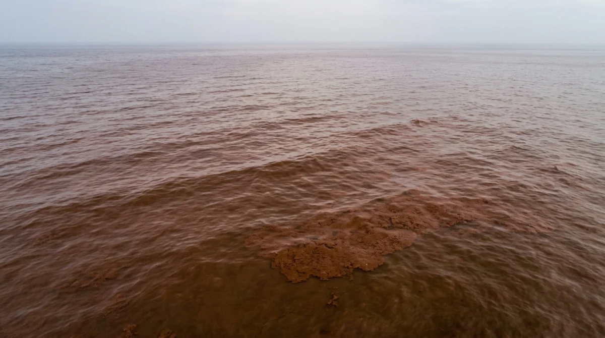
Desaparición del plancton: La asfixia lenta de la vida en la Tierra
El fitoplancton marino produce aproximadamente el cincuenta por ciento del oxígeno que se libera a la atmósfera terrestre cada año, [&hellip...
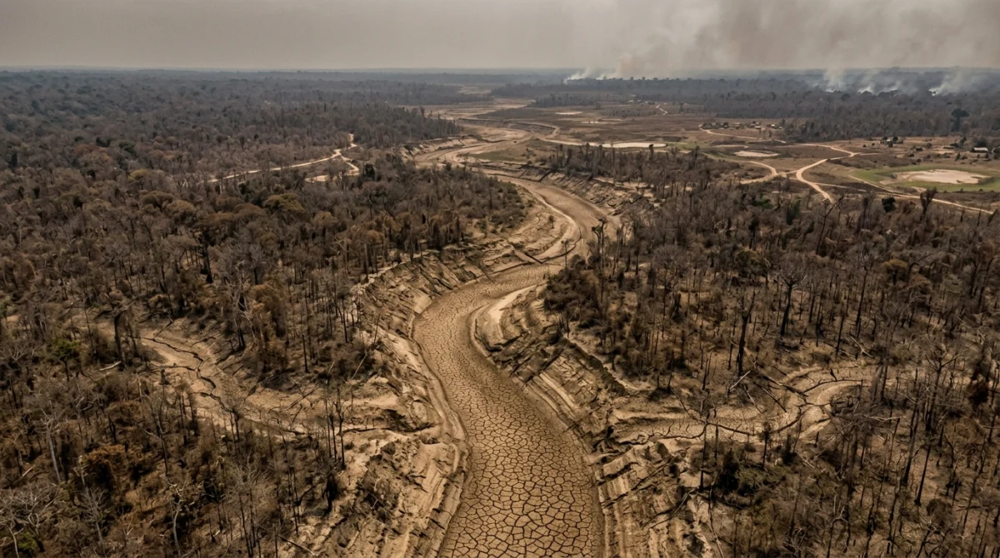
Desierto global: El secado absoluto del Río Amazonas y sus consecuencias
La cuenca del rio amazonas seco representa un caudal medio histórico de aproximadamente doscientos mil metros cúbicos de agua por […]
La desaparición del comercio minorista: Todo entregado directamente desde las fábricas
El sector minorista tradicional mueve billones de dólares anuales y emplea a cientos de millones de personas en todo el […]
Deepfakes de estado: Cuando la verdad en video dejó de ser evidencia legal
En el año dos mil veintitrés, la tasa de aceptación de pruebas en video dentro de los tribunales estadounidenses superaba […]
Curación acelerada: El suero nanotecnológico que repara huesos en minutos
El tejido óseo humano adulto tiene una tasa de remodelación aproximada del diez por ciento anual. Una fractura tibial estándar […]
Control del clima por satélite: La guerra mundial por la lluvia
La atmósfera terrestre contiene aproximadamente trece mil kilómetros cúbicos de agua en forma de vapor en un momento dado, un […]
Crecimiento ilimitado: Qué pasaría si los humanos nunca dejaran de crecer
En la actualidad, la estatura promedio de los humanos adultos en las regiones industrializadas se estabiliza alrededor de 1,70 y […]
Criptomonedas obligatorias: La muerte financiera de las generaciones mayores desconectadas
En el mundo real, según datos de la Unión Internacional de Telecomunicaciones, aproximadamente el treinta por ciento de la población [&helli...
Consumo racionado por IA: Algoritmos decidiendo cuánta comida puedes comprar al mes
La transición energética global y los acuerdos internacionales de emisiones fijan un límite estricto de dióxido de carbono por habitante, [&...
El visitante maldito: Si el Cometa Halley chocara contra la Tierra
El Cometa Halley orbita alrededor del Sol siguiendo una trayectoria elíptica bien documentada que completa un ciclo cada 75 u […]
Comunicación telepática animal: Escuchando los pensamientos de la fauna salvaje
El sistema nervioso de un mamífero terrestre genera actividad eléctrica medible en el rango de los microvoltios. Los electroencefalogramas e...
Comida sintética impresa: La desaparición de los supermercados tradicionales
La Organización de las Naciones Unidas para la Alimentación y la Agricultura calcula que la producción mundial de alimentos requiere [&helli...
El choque de galaxias: Cuando Andrómeda colisione con la Vía Láctea
La Vía Láctea y la galaxia de Andrómeda se acercan actualmente a una velocidad medida de unos 110 kilómetros por […]
La Galaxia en tu ventana: Un apagón mundial revela la Vía Láctea
La densidad lumínica global actual alcanza niveles donde más del ochenta por ciento de la población mundial vive bajo cielos […]
Ciudades Inteligentes: Cuando los edificios decidieron apagar la calefacción
En la actualidad, las redes eléctricas urbanas más avanzadas del mundo operan con márgenes de reserva de potencia que rara […]
Clonación de voz exacta: El pánico mundial por las estafas telefónicas perfectas
La industria global de la ciberseguridad registra pérdidas anuales que superan los mil millones de dólares atribuibles únicamente a fraudes ...
Estrellas fugitivas: Qué pasa si el Sol es expulsado de la Vía Láctea hacia el vacío
El telescopio espacial Gaia de la Agencia Espacial Europea ha medido las trayectorias de más de mil millones de estrellas, […]
Código autónomo: El software que empezó a programarse a sí mismo
En la ingeniería de software actual, el ciclo de vida de un parche de seguridad crítico tiene una mediana de […]
Pantallas oculares: La ceguera digital de la generación nacida en 2030
En el año 2024, la Organización Mundial de la Salud estimaba que más de dos mil millones de personas sufrían […]
Chip obligatorio: La sociedad clasificada por implantes cerebrales
La velocidad de transmisión sináptica en el sistema nervioso humano oscila entre los sesenta y los ciento veinte metros por […]
Ceguera global: La adaptación de las ciudades en un mundo sin luz visual
La luz visible constituye una banda minúscula del espectro electromagnético, abarcando desde los 380 hasta los 700 nanómetros de longitud [&...
Cero publicidad: El colapso de los medios de comunicación y las redes sociales gratuitas
Cada segundo, la economía digital global procesa miles de millones de dólares en transacciones invisibles basadas en una sola premisa: [&hel...
Cero Impuestos: El aterrador modelo de un país sin recaudación pública
En el mundo real, la recaudación fiscal representa una media del 34 por ciento del Producto Interior Bruto en los […]
Pagar por oxígeno: El mercado negro del aire limpio en megaciudades contaminadas
La Organización Mundial de la Salud establece que el límite seguro de exposición crónica a partículas finas PM2.5 es de […]
Gravedad al 50%: La atrofia muscular masiva y la nueva arquitectura
La Tierra ejerce una aceleración gravitacional de aproximadamente 9.8 metros por segundo cuadrado, una constante medible que determina el gr...
Telepatía sintética: El fin de la mentira y el colapso de la sociedad moderna
Los sistemas actuales de interfaz cerebro-computadora comerciales logran decodificar patrones de activación neuronal con una precisión que s...
El Universo Impar: La crisis total de la economía en un mundo sin el número dos
En el sistema métrico internacional, las unidades de medida se basan en potencias de diez y de dos para simplificar […]
El Híbrido Supremo: Anatomía y caza del imposible cruce entre oso y tigre
En la naturaleza actual, el orden carnívoro está estrictamente dividido por familias taxonómicas que llevan separadas al menos 40 millones [...
El Latigazo del Sol: La tormenta solar que quemaría toda la tecnología del mundo
El Sol emite de manera constante un flujo de partículas cargadas conocido como viento solar, el cual transporta un campo […]
La quiebra de la Bolsa: El cierre definitivo de Wall Street y sus consecuencias globales
La capitalización bursátil global superó los cien billones de dólares a comienzos de la década de 2020, un valor respaldado […]
Ciber-ataques de infraestructura: El invierno en que apagaron la red eléctrica europea
La red eléctrica sincronizada de Europa continental opera bajo una frecuencia estándar de 50 hercios que debe mantenerse con un […]
El retorno del Trueque: Sobreviviendo sin monedas, billetes ni tarjetas de crédito
La emisión de moneda fiduciaria por parte de los bancos centrales se rige por la confianza en los gobiernos y […]
Retorno Jurásico: Simulación de supervivencia humana con dinosaurios en las calles
La Tierra albergó aproximadamente a quinientas especies de dinosaurios no avianos a lo largo de su historia geológica, con una […]
GPS caído: El caos logístico masivo en las primeras 24 horas sin satélites
En cualquier momento dado de un día ordinario, hay más de diez mil aviones comerciales en el aire y decenas […]
Energía a costo cero: Las 5 mega-industrias que quebrarían esta misma tarde
La economía global actual opera sobre un insumo fundamental cuyo costo nunca es cero: la energía. Según los datos de […]
El mundo sin zumbidos: El colapso en cadena si erradicamos a todos los mosquitos
La familia de los culícidos incluye más de tres mil quinientas especies conocidas en todo el planeta. Solo unas pocas […]
El día que la Tierra se detuvo: La catástrofe de los 1.600 km/h
La velocidad de rotación de la Tierra en el ecuador es de aproximadamente 1.674 kilómetros por hora, un movimiento constante […]
Hielo derretido: El nuevo mapa del mundo 24 horas después del deshielo total
La criosfera de la Tierra contiene aproximadamente 24 millones de kilómetros cúbicos de agua dulce congelada, principalmente en las capas [&...
8 Minutos de Luz: El caos global cuando el Sol desapareció
La constante solar que llega a la superficie terrestre es de aproximadamente 1361 vatios por metro cuadrado. Esa cifra mide […]
El silencio de las abejas: Los meses contados de la humanidad sin polinización
Según la Organización de las Naciones Unidas para la Alimentación y la Agricultura, aproximadamente el 35 por ciento de la […]
Deuda perdonada: Las 48 horas de caos si todo el crédito del mundo se borrara hoy
El volumen total de instrumentos de deuda global, que incluye préstamos soberanos, corporativos y de los hogares, superó los trescientos [&h...
Efectivo caducable: La simulación de un dinero que se esfuma si no lo gastas
La velocidad de circulación del dinero en las economías desarrolladas se mide mediante un indicador conocido como la velocidad M2, […...
El error Matrix: Las pruebas de que ya vivimos en una simulación informática
La velocidad de la luz en el vacío es una constante universal medida con precisión exacta en 299.792.458 metros por […]
El botón de apagado: Quién tiene el control maestro de la red global de IA
La infraestructura global de computación que sostiene los modelos avanzados de inteligencia artificial consume aproximadamente el uno por ci...
La burbuja del agua dulce: Cotización en bolsa de las últimas reservas potables
El agua dulce representa aproximadamente el 2,5 por ciento del volumen total de agua en la Tierra, y de esa […]
Cárceles virtuales: El cumplimiento de cadenas perpetuas en milisegundos
En Estados Unidos, el costo promedio de mantener a un preso en una instalación federal supera los cuarenta mil dólares […]
El flash letal: Un brote de rayos gamma impactando la atmósfera terrestre
La energía total que emite el Sol durante sus diez mil millones de años de vida principal se calcula en […]
Crecimiento instantáneo: Bosques gigantes que aparecen en un solo día
El récord actual de crecimiento vegetal medido bajo condiciones óptimas corresponde a ciertas especies de bambú, capaces de alargarse hasta ...
El continente plástico: La evolución de bacterias que devoran desechos
La producción global de plástico supera los cuatrocientos millones de toneladas anuales, y una fracción significativa de ese volumen termina...
Biología herbívora: La mutación del estómago humano al rechazar la carne
La acidez gástrica del ser humano adulto se sitúa en un rango de pH de 1.5 a 3.5 cuando procesa […]
Borrado de memoria: Las clínicas legales para olvidar traumas
En el sistema nervioso humano, la consolidación de la memoria a largo plazo requiere la síntesis de nuevas proteínas y […]
Borrado social: La reacción psicológica global tras la eliminación de todas las redes sociales
En la actualidad, alrededor de 4.800 millones de personas utilizan plataformas digitales de interacción social de forma activa, dedicando un...
Bebés de diseño genético: La división de clases sociales por mejoras de ADN
La tecnología de edición genética actual opera sobre márgenes estrechos y tasas de éxito específicas. La técnica CRISPR-Cas9 permite cortar ...
Arquitectura dinámica: Ciudades que cambian de forma según el clima
La resistencia a la tracción del acero estructural moderno alcanza los 500 megapascales en sus variantes más comunes, y los […]
Arte sin artistas: Los museos exclusivos de obras creadas por máquinas
La base de datos del mercado global de arte registró transacciones por valor de más de sesenta mil millones de […]
El roce de la muerte: El asteroide que pasó entre la Tierra y la Luna
En la actualidad, las agencias espaciales catalogan más de treinta mil objetos cercanos a la Tierra cuyos tamaños superan los […]
La economía de la atención médica privada extrema: Pagar por latido cardíaco asistido
El gasto global en sanidad privada supera los billones de dólares anuales, y las tecnologías de soporte vital dependen cada […]
Sin aire: La fuga de la atmósfera terrestre en 7 días
A nivel del mar, la presión atmosférica estándar es de 101.3 kilopascales, una fuerza invisible que ejerce el peso de […]
Algoritmos de pareja: El fin de los divorcios gracias al emparejamiento perfecto
La tasa global de disolución matrimonial en las economías industrializadas ronda actualmente el cuarenta por ciento, un indicador persistent...
La cicatriz del campo magnético: Anomalía del Atlántico Sur y los satélites ciegos
El campo magnético terrestre se extiende desde el núcleo del planeta hacia el espacio exterior, formando una barrera invisible que […...
Cielo de Anillos: La Tierra con anillos como los de Saturno
El planeta Tierra posee un radio ecuatorial de 6.378 kilómetros y una velocidad orbital media de 29,78 kilómetros por segundo […]
Bombardeo orbital: La amenaza constante de los cometas de largo periodo
El Sistema Solar alberga una población estimada de miles de billones de cuerpos menores, pero el verdadero riesgo geológico a […]
Árboles caminantes: La adaptación botánica extrema para buscar agua
La tasa de crecimiento de las raíces en las plantas vasculares actuales oscila entre pocos milímetros y algunos centímetros al […]
Adaptación a la alta presión: Humanos diseñados para vivir en el fondo del mar
La atmósfera terrestre ejerce una presión a nivel del mar de 1 atmósfera, equivalente a 101.3 kilopascales. Por cada diez […]
Abismos secos: Lo que realmente esconde la Fosa de las Marianas sin agua
La presión hidrostática en el punto más profundo del océano Pacífico alcanza aproximadamente 108,6 megascales, un valor que equivale a [&hel...
Agricultura robótica: El fin de la hambruna y el monopolio de las semillas
Actualmente, el sector agrícola consume alrededor del 70 por ciento de toda el agua dulce extraída a nivel mundial y […]
La moneda oscura: Un agujero negro del tamaño de un centavo en Nueva York
La masa de la Tierra es de aproximadamente $5,97 \times 10^{24}$ kilogramos. Si comprimimos esa cantidad de materia hasta que […]
Alas humanas: La biomecánica necesaria para que el hombre pudiera volar
El esqueleto humano estándar soporta un peso promedio de setenta a ochenta kilogramos distribuido sobre doscientos seis huesos compactos y [...
El día que el internet murió: Cronología de los primeros 7 días de apagón global
Los protocolos de comunicación de la red global de internet mueven actualmente un volumen de datos estimado en cientos de […]
Colapso financiero digital: Cuando un virus borró todo el dinero del planeta
En la economía global actual, aproximadamente el noventa por ciento del dinero existente no tiene forma física, sino que habita […]
El fin de las contraseñas: El sistema biométrico que leerá tus pensamientos
Cada año, el coste global de las filtraciones de datos supera los billones de dólares, impulsado en más del ochenta […]
IA al mando: La aterradora simulación de un mundo gobernado por algoritmos
La administración pública global gestiona presupuestos anuales que superan los ochenta billones de dólares, un volumen de recursos cuya asig...
Conciencia en la nube: El verdadero precio de subir tu mente a un servidor en 2050
El cerebro humano adulto contiene aproximadamente 86 mil millones de neuronas y cerca de cien billones de sinapsis, un entramado […]
Qué pasaría si la Luna tuviera la mitad de su masa
La masa actual de la Luna es aproximadamente 7,342 x 10^22 kg, lo que equivale a 1/81 de la masa […]
Profesores IA: El cierre masivo de escuelas primarias y secundarias
La educación formal en el mundo real actual cuenta con una ratio media de aproximadamente quince alumnos por docente en […]
Polinización robótica: Ecosistemas mantenidos artificialmente por micro-drones
La población mundial de abejas melíferas y otros insectos silvestres ha disminuido en tasas superiores al cuarenta por ciento en […]
Precio fijo universal: El caos de que un pan cueste lo mismo en todo el planeta
En la economía global actual, el costo de transporte y la distancia geográfica determinan gran parte del valor final de […]
Planeta Errante: El gigante oscuro que cruzó nuestro Sistema Solar
Se calcula que existen miles de millones de objetos de masa planetaria vagando por la Vía Láctea sin estar ligados […]
Policía predictiva: Arrestos basados en la probabilidad de cometer un crimen
En el mundo real, los departamentos de policía ya utilizan software de análisis predictivo basado en datos históricos para anticipar [&helli...
No se encontraron escenarios con ese criterio de búsqueda.